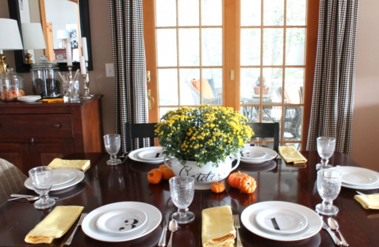

.png)
.PNG)
.PNG)
.PNG)
.PNG)
.PNG)
.JPG)
.JPG)
.PNG)
.PNG)


.jpg) I finally have some photos of part of the fall decor around the house. Â Good thing…it is almost November, and I know you are already gathering ideas for Christmas. I hope you can enjoy a little more Halloween this week. Â I was going to start with the foyer and then move into the living room, but I think you all would rather see the kitchen. Â So we are just going to walk right on into the dining room and kitchen area.
I finally have some photos of part of the fall decor around the house. Â Good thing…it is almost November, and I know you are already gathering ideas for Christmas. I hope you can enjoy a little more Halloween this week. Â I was going to start with the foyer and then move into the living room, but I think you all would rather see the kitchen. Â So we are just going to walk right on into the dining room and kitchen area.
The table is set for dinner.  I told you all last year that I am not a fan of “scary” for Halloween, so my October decorating is centered around fall mums, pumpkins, and candy…lots of candy as you will see in my next post. 🙂
I wanted a cheerful table, and I really like my number plates. Â Using them to show October 31 for Halloween kept the decor away from dark and morbid. Â A black chalk marker was used to write October on the soup tureen that holds the mums. Â It washes off easily. Here is a closer look.
 Pumpkins make an appearance here in the dining room cabinet along with orange and yellow cookbooks.
Pumpkins make an appearance here in the dining room cabinet along with orange and yellow cookbooks.
And the antique cupboard holds jars of Oreos and a snack of peanuts and candy corn. Â And yes, we devour all the snacks around here. Â (I have the worst sweet tooth of anyone in the house!)
Moving on around the room, the island has a dose of orange with the Izze drinks by the cereal jars.
And now let’s walk on into the kitchen.
There are more pumpkins on the tray with the coffee.
And more orange cookbooks on the counter.
The kitchen desk area has touches of orange and pumpkins for October.
Here is a closer look at the chalkboard with the pumpkin muffins recipe for fall.
Did I use enough orange for you? Â It is unusual for me to use so much of that color, but for some reason, I am really liking it this year (along with pumpkins and mums.)
I will be back again in a day or two with more photos of the seasonal decorations in other rooms.  I hope you will be back too. 🙂
Thanks for stopping by!


.PNG)
LOVE your soup tureen — Where did you buy it? I am desperately trying to find one of that size and the handles in the same direction
Hi Kelly,
I love the personal touches you add to everything. Your home looks lovely. I noticed that you used the jars for storage. Does it keep your food items fresh? Are they from Target?
Thank you for your help!
———————————————————————–
Thank you Angela. The jars seem to keep everything fresh, but then we go through those cereals on the island very fast (and all the cookies too.) I have not had any problems with the jars of flour and granulated sugar. The one problem does seem to be the brown sugar. I don’t go through that ingredient very fast (except around November and December when there is more baking going on.) It seems to harden, but zapping it in the microwave does take care of that and soften it again. I purchased most of my jars at Wal-mart, and when they didn’t have what I needed, Target did supply the rest. 🙂
Kelly
Very tasteful! I’m not a big Halloween fan, but love fall decor almost as much as Christmas. The touch of Orange with tans and khaki is a soothing palette to me with the Orange warming things up just right. Love your snack jars, but too much temptation for my husband! I have more willpower than him, but not by much! 😉
As usual, loved everything! The orange touches are just right. Hope you are enjoying this luscious fall weather!! It is even “fall-like” weather here in FL. AC turned off and windows opened– even a light quilt on the bed. Just hope it stays– now if I could only have colored leaves!? But not to be– we ARE blessed with beautiful rain trees and blooming bottle brush trees.” Happy Fall– ya’ All”–as we say in my beloved KY!
Your table is gorgeous Kelly…..Love the “October” script on the soup tureen!!!
…Kelly, I am right with you on the fall/Halloween decorating….I hate the dark, scary, webs, spiders, bats kind of thing………..but love mums, bittersweet, pumpkins, etc…..since your home is more neutral you can accent with colors of the seasons, love that!!!
First, I truly enjoyed your photos of your fall kitchen and dining area. Secondly, I need a black chalk marker to copy your October tureen. Happy Halloween!
Kelly,
I love it all. You have such a peaceful and relaxed feeling to your home. I too love pumpkins and mums this time of year. Thanks for sharing it all with us!
Very pretty. I especially like your checked curtains ~ perfect!
Your house is so pretty, and you styled eveyrthing to perfection. I think the photo of the desk area belongs in a magazine!
Mmm! I love your house pictures–so cozy! I am still putting out fall/Thanksgiving (I feel I can get away with dragging it out, as I do Thanksgiving for ALL 35 of the relatives here.) I am going to copycat your jar fillers–so fun! But I need you to visit & do the chalkboard art for me. 😉 I promise to have lots of sweets on hand.
Just the right amount of orange, IMHO. I don’t do orange inside my home…just outside! Your wood countertops are gorgeous! 😉
Kelly, I only do simple fall decorations, too. I love visiting your dining room and kitchen again.
I’ve been anxiously waiting for this post. I love to see how you change things around for the different seasons. The pumkins and mums look pretty. (I’m not a fan of scary either!) And you’re the queen of kitchen styling in my book. I LOVE those number plates! I always keep my eyes open for anything similar when I am at HomeGoods or TJMaxx. No luck so far though.
Very pretty, as always! I will be looking for soup tureen and a black chalk marker to write the name of the month.
Hi Kelly, Oh, everything looks so lovely! I’m loving your touches of orange. They really pop with the black & white. Beautiful!
Every thing looks great. I am like you I don’t do scary for Halloween. I just decorate for fall then every thing can remain until after Thanksgiving. To me your home has just enough fall without being over done.love your style.
I love your style so much! Would you be able to tell me where you got the plate rack? I have been looking for one just like it….with no luck.
Thanks,
Cindy
————————————————————————
Cindy,
The plate rack is actually a book rack for children from Pottery Barn kids. I got it years ago. I think it was their Catalina Magazine rack, and I had my husband cut the top rail off of each shelf. You can look it up here: http://www.potterybarnkids.com/products/catalina-magazine-rack/?cm_src=AutoSchRel
Hope that helps!
Kelly